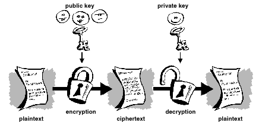

There are many articles on what is and how to use PGP and GPG. This article will explain only the basics of what is, how to use PGP and GPG is covered in this article.
The name
PGP stands for Pretty Good Privacy and GPG stands for GNU Privacy Guard.
Although PGP it's a proprietary software and rumours say the creator of PGP introduced a backdoor into its program, no real story emerged with this claim. Moreover, the source code is available and no one claimed that a backdoor has been found.
How does it work ?
Here is a very basic illustration

The public key is for everyone to see it and use it to encrypt documents for you, the private key is for you to decrypt de file.
Which one to use ?
There are many differences between PGP and GPG, but as long as you make use of either one of them, you should be on the safe side.
For a windows user, PGP might be the better option as it integrates somewhat better with the environment.
For a Linux user, GPG seem the obvious choice
GPG should be the default software for MAC OS
More info will come...